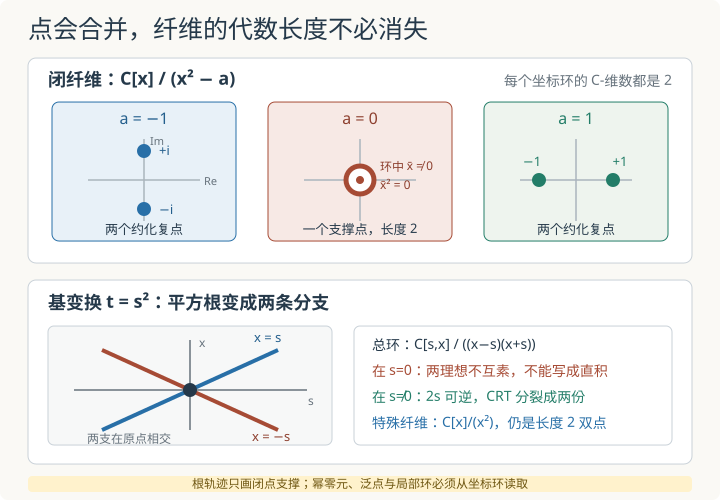

本页目录
基础衔接 14 · 纤维与基变换：两个点怎样合成一个双点
先修：模、商与张量积、张量积与平坦性、仿射概形与反向环映射。本讲固定复数域，用 \(t=x^2\) 这一条仿射态射推导概形纤维、非约化特殊纤维与一次基变换。只在这个有限自由例子中讨论平坦性和纤维长度，不建立一般平坦族、分歧或相交理论。
两个解在原点撞成一个以后，另一个解真的消失了吗？
1. 纤维不是把点画在竖线上，而是做一次张量积
设仿射态射
来自反向环同态 \(B\to A\)。对底空间中的点 \(p\in\operatorname{Spec}B\)，它的剩余域记为 \(\kappa(p)\)。概形论纤维定义成纤维积
仿射纤维积把箭头翻回环上的张量积，因此
这比集合论原像多做了一件关键的事：不仅找出哪些素理想落在 \(p\) 上，还保留商环中的幂零元、剩余域和重数信息。
本讲的固定模型是
在闭点坐标上，它对应
下面先算底空间闭点 \(p_a=(t-a)\) 的纤维，其中 \(a\in\mathbb C\)。因为 \(\kappa(p_a)=\mathbb C\)，且 \(t\) 在剩余域中变成 \(a\)，
所以“令 \(t=a\)”不是随意代值，而是张量积化成商环后的结果。
2. 非零闭纤维：两个不同的约化点
若 \(a\ne0\)，在 \(\mathbb C\) 中选平方根 \(r\)，使 \(r^2=a\)。于是
因为 \(r\ne0\) 且复数域特征不是 2，两个根不同，理想 \((x-r)\) 与 \((x+r)\) 互素。中国剩余定理给出
因此每个非零复闭点纤维含两个不同闭点 \(x=r,-r\)，每一点都是约化的，局部长度各为 1。
若实验只让 \(a\) 沿实轴移动，\(a>0\) 时两根落在实轴，\(a<0\) 时两根落在虚轴；但底域仍是 \(\mathbb C\)，所以负的实参数也有两个复闭点。不能把“没有实根”误写成“纤维为空”。
3. 零闭纤维：只有一个点，却仍保留长度 2
令 \(a=0\)，纤维环变成
它只有一个素理想 \((x)\)：每个素理想都必须包含幂零元 \(x\)，而商掉 \((x)\) 后只剩域 \(\mathbb C\)。因此底层拓扑空间只有一个闭点。
但 \(x\) 在 \(R_0\) 中不为零，只满足 \(x^2=0\)。所以该纤维不是约化点 \(\operatorname{Spec}\mathbb C\)，而是带有一阶无穷小方向的双点。作为复向量空间，
更可算地，对任意闭纤维 \(R_a=\mathbb C[x]/(x^2-a)\)，以 \((1,\bar x)\) 为基，“乘以 \(\bar x\)”的矩阵是
当 \(a=0\) 时，这仍是非零矩阵，但平方为零。根图只显示一个原点，这个算符却直接暴露了该点上保留的幂零结构。
组成列
的两个相邻商都同构于 \(\mathbb C\)，故这个局部 Artin 环的长度为 2。这里“长度 2”不表示纤维的 Krull 维数是 2；它仍是零维概形，也不表示有两个无法区分的普通拓扑点。长度记录的是结构层中仍未消失的代数厚度。

4. 为什么总长度不跳：源环本来就是秩 2 自由模
任意多项式都能唯一拆成偶次与奇次部分：
把 \(t\) 的作用解释为乘 \(x^2\)，就得到 \(\mathbb C[t]\)-模同构
所以 \(A\) 是秩 2 的自由 \(B\)-模，因而在本例中是平坦模。与任意点的剩余域张量后，
仍是二维 \(\kappa(p)\)-向量空间。对这里的有限复闭点纤维，这个维数就是总长度：
| 闭点参数 | 纤维环 | 支撑闭点数 | 各点长度 | 总长度 |
|---|---|---|---|---|
| \(a\ne0\) | \(\mathbb C\times\mathbb C\) | 2 | \(1,1\) | 2 |
| \(a=0\) | \(\mathbb C[x]/(x^2)\) | 1 | 2 | 2 |
因此“所有闭纤维总长度为 2”不等于“每个闭纤维都有两个不同点”。平坦性在这个例子里容许两个点合并，只要特殊纤维用非约化结构保存丢失的长度。
这里只使用了“自由模推出平坦模”。一般情况下，凭几张纤维图或长度表不能自动证明一个态射平坦；有限平坦、平坦族的判据与纤维长度定理需要额外假设。
5. 闭点不是底空间的全部点
上面 \(a\in\mathbb C\) 描述的是 \(\operatorname{Spec}\mathbb C[t]\) 的闭点 \((t-a)\)。底空间还含泛点
泛纤维为
\(t\) 不是 \(\mathbb C(t)\) 中的平方：按不可约因子 \(t\) 计算零点阶数，\(t\) 的阶数为 1，而任意有理函数平方的零点与极点阶数都为偶数。因此 \(x^2-t\) 在该域上不可约；这个商本身是次数 2 的域扩张，泛纤维只有一个点，其剩余域却比 \(\mathbb C(t)\) 大二次。于是“非零纤维有两个点”必须严格读成“非零复闭点上的纤维有两个复闭点”，不能拿闭点图代替整个素谱。
6. 基变换：让平方根成为底空间上的坐标
现在用
改变底空间。拉回后的总空间是
其坐标环为
几何上出现两条分支
它们在 \((s,x)=(0,0)\) 相交。这里不能直接使用中国剩余定理宣称
因为两个理想的和是
它在原点仍是适当理想，并不等于整个环。换句话说，两条分支在原点没有分开。
只有把 \(s\) 变成可逆元，也就是删掉基底的原点后，\(2s\) 才可逆，两个理想才互素。此时中国剩余定理给出
两个线性因子各生成素理想，而且
所以取两条分支上的限制给出单射
它不是满射：像中的一对多项式在 \(s=0\) 必须取相同值。这个单射说明总空间 \(X'\) 本身是两条相交的约化直线；但它在 \(s=0\) 上的纤维仍是 \(\operatorname{Spec}\mathbb C[x]/(x^2)\)，是非约化双点。约化的总空间可以拥有非约化纤维，这两句话并不冲突。
7. 实验怎样读，哪些东西它没有画出
实验固定复数底域，只让闭点参数 \(a\) 沿实区间 \([-2,2]\) 移动。它会把 \(x^2=a\) 的根画在复平面上：负 \(a\) 给两个纯虚根，正 \(a\) 给两个实根，\(a=0\) 显示一个带长度 2 标记的双点。根轨迹只是闭点支撑的动画，不是完整概形，也没有画出泛点、局部环或所有素理想。
无脚本后备：
| \(a\) | 两个代数根 | 不同支撑点数 | 是否约化 | \(\dim_{\mathbb C}\) 纤维环 |
|---|---|---|---|---|
| \(-2\) | \(\pm i\sqrt2\) | 2 | 是 | 2 |
| \(-1\) | \(\pm i\) | 2 | 是 | 2 |
| \(0\) | \(0\)，重根 | 1 | 否，环中 \(\bar x\ne0\) 但 \(\bar x^2=0\) | 2 |
| \(1\) | \(\pm1\) | 2 | 是 | 2 |
| \(2\) | \(\pm\sqrt2\) | 2 | 是 | 2 |
8. 两道迁移题
题一。 把模型改成 \(\mathbb C[t]\to\mathbb C[x]\)，\(t\mapsto x^3\)。证明源环是秩 3 自由模，并计算非零闭纤维与零闭纤维的支撑点数、约化性和总长度。若再作 \(t=s^3\) 的基变换，会看到什么？
按次数除以 3，再分解三次差
每个多项式唯一写成
所以 \(\mathbb C[x]\) 以 \(1,x,x^2\) 为 \(\mathbb C[t]\)-基，秩为 3。闭纤维环是
若 \(a\ne0\)，多项式与导数 \(3x^2\) 没有公共根；在 \(\mathbb C\) 上它分成三个不同线性因子，因此纤维有三个约化闭点，总长度 3。若 \(a=0\)，得到 \(\mathbb C[x]/(x^3)\)：只有一个支撑点，\(x\) 为三阶幂零元，组成列
显示长度为 3。
令 \(\omega=e^{2\pi i/3}\)。基变换 \(t=s^3\) 后
得到三条在原点相交的分支。只有在 \(s\) 可逆后，它们才两两互素并由中国剩余定理分裂成三份 \(\mathbb C[s,s^{-1}]\)；原点处不能写成三个环的直积。
题二。 把底域改为 \(\mathbb R\)，仍取 \(t=x^2\)。对实闭点 \(a>0,a=0,a<0\)，纤维是否分别有两个、一个、零个点？
区分实有理点、素谱点和剩余域
\(a>0\) 时
有两个实闭点。\(a=0\) 时得到 \(\mathbb R[x]/(x^2)\)，只有一个非约化闭点。
若 \(a<0\)，\(x^2-a=x^2+|a|\) 在 \(\mathbb R\) 上不可约，商环同构于 \(\mathbb C\) 作为实代数。它的素谱仍有一个闭点，只是剩余域为 \(\mathbb C\)，没有 \(\mathbb R\)-值根。因此纤维不是空集。其局部环长度为 1，剩余域对 \(\mathbb R\) 的次数为 2，所以总次数仍为
“没有实有理点”与“概形没有点”是两种不同陈述。
速查与资料
| 观察 | 正确对象 | 本例结论 |
|---|---|---|
| 点 \(p\) 上的纤维 | \(\operatorname{Spec}(A\otimes_B\kappa(p))\) | 闭纤维为 \(\operatorname{Spec}\mathbb C[x]/(x^2-a)\) |
| 支撑点数 | 纤维环的素理想数 | 非零闭纤维 2，零闭纤维 1 |
| 总长度 | 有限复纤维坐标环的复维数 | 始终为 2 |
| 基变换 | 纤维积，对应环张量积 | \(x^2-s^2=0\) 的两分支只在 \(s\ne0\) 分裂 |
概形纤维的定义与剩余域见 Stacks Project：Base change in algebraic geometry，仿射纤维积的张量积公式见 Fibre products of schemes。有限局部自由态射的秩与纤维次数可对照 Finite locally free morphisms 和 Universally bounded fibres。资料核查：2026-09-08。
下一步可回到切空间，比较双点的普通点、长度与 \(\mathfrak m/\mathfrak m^2\)；也可回到张量积与 Tor，理解基变换为何由张量积执行。
继续计算：非平坦族与导出纤维比较普通纤维相同但 Tor 不同的两个族，把乘法的核接回导出张量。